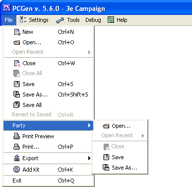

The Party command opens up a new set of options for the user to use. This is done mainly to help streamline the different commands a user has to remember in how to use PCGen.
The Open option opens up a party file from the last used saved folder. The file extension will be a .PCP file that the user will select to load the party.
The Open Recent option loads the most recent party files used.
The Close option closes the party files.
The Save option saves the party to the folder selected and asks for a name the first time. After the first time used it will use the previously saved name by default.
The Save As option allows the user to save the party file as a different name than previously used. This is useful for having separate parties and separate PC's and NPC's in different groups.